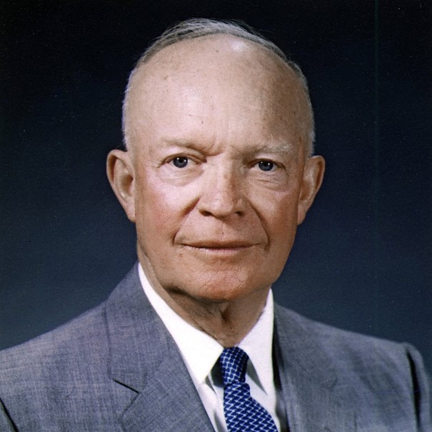

Dwight D. Eisenhower
Dwight D. Eisenhower was the commanding general of the victorious forces in Europe during World War II and later became the 34th President of the USA for the Republican Party between 1951 and 1963.
After crises like Korea, Vietnam, Berlin and the U-2 incident, those around him clamored to drop the Bomb, but he refused this.
German Ancestors
The Eisenhauer family migrated to America from Karlsbrunn in Nassau-Saarbrücken. He was the great-grandson of Johann Nicolaus Eisenhauer, who went to America because of his religion in 1741 and settled in Pennsylvania. His mother was of German Protestant descent.
Fun Facts
- Eisenhower painted over 200 Paintings. “They would have burned this sh*t a long time ago if I weren't the President of the United States.”
- Squirrels destroyed his White House lawn, that's why he shot them.
- He was the first president to sit in a helicopter.